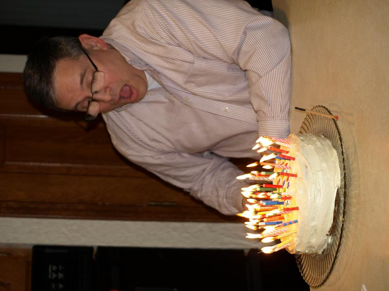

|
I am a teacher and mathematician, who loves beautiful music and history.
I like to dabble in music (singing, guitar, piano), house projects,
sports, exercise. The most important thing about me is that, although
I do so haltingly and poorly most of the time, I am a follower of
Jesus Christ and the traditional teachings of his Church concerning
our place in the Cosmos, our fallenness, Jesus' dual nature as God and
man, the stories of his life, death and resurrection and the salvation
from our slavery to sin that is possible as a result of them.
I teach at Calvin College, a private Christian college in Grand Rapids, MI, where I am a member of the Department of Mathematics and Statitics. I have taught many specific courses over the near 20 years I have been at Calvin. Mine is not a career distinguished by great academic leadership, nor by a body of scholarship in any field. I have focused primarily on teaching and learning. Students can expect these things from me in courses I teach:
This semester at Calvin I am teaching
|
 |
Nonfiction/historical
Teaching and Learning Video lecture series by Dr. Stephen Chew at Samford Univ.: How to get the most out of studying
A video of a lecture given by Harvard Physics professor Eric Mazur on teaching
The Lesson of Grace in Teaching, a blog by Professor Francis Su of Harvey Mudd College
Last Revised 06/21/00